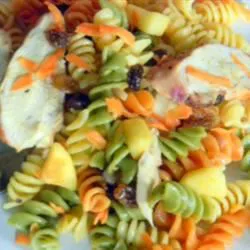

Bring a large pot of salted water to a boil. Add pasta and cook until al dente, 8 to 10 minutes. Drain.
Combine curry powder, salt, mayonnaise, and lemon juice in a large bowl. Add cooked pasta and toss to coat. Mix in apple, raisins, green onion, carrots, tofu, and pine nuts.
